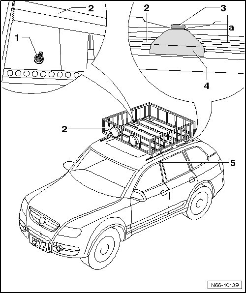

Roof Luggage Basket
eRoof Luggage Carrier
Roof Luggage Basket
Removing
• If necessary, remove any objects before removing roof luggage basket.
• Roof luggage basket weighs 95 lbs (43 kg), at least 2 mechanics per side are required for the installation.

- Disconnect connection for auxiliary headlamp - 5 -.
- Remove hex nuts - 1 -.
- With additional mechanics, lift off roof luggage basket - 2 - upward from brackets - 4 -.
Installing
• Roof luggage basket weighs 95 lbs (43 kg), 2 technicians per side are required for the installation.
• Guide rails of roof luggage carrier bar must be present for installation of roof luggage basket.
• Roof luggage carrier bar must not be installed.
- With additional mechanics, place roof luggage basket - 2 - on to bracket - 4 -.
- Tighten hex nuts - 1 - on left and right far enough that dimension - a - = 5 mm has been set on rubber bushings - 3 -.
- Check dimension - a - on rubber bushings - 3 - using adjustment gauge (3371).
- Connect the connection for auxiliary headlamp - 5 -.